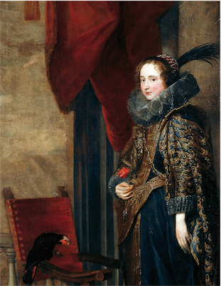

Francesco Saverio Adorna was one of the early balloonists (some say even the first one) and his ascension only historically documented is the tenth of the story. It must be considered, therefore, a true pioneer and deserves for this to be counted among the great characters dell'aerostatica Italian.
The sky is open we go up there
His family was descended from the Adorna (or Adorno) of Genova in the late fourteenth and the second decade of the sixteenth century had prestige and power by giving several doges to the maritime republic. In 1528, however, the Andrea Doria, after having deposed the doge Antoniotto II Adorno, forced them to leave the city and seek refuge in the Borromean Islands on Lake Maggiore. From there they settled in the Valley vigezzo in Piedmont, where Francis Xavier was born January 14, 1744 in Villette, a village near Malesco. In 1758, as is customary for the villagers, the young Minetto emigrated with his father before going to Switzerland and then in Argentina. Before 1744 returned to Europe and settled in Strasbourg where he worked in various commercial activities accumulating a considerable fortune.
We are in the Enlightenment and the scientific research has developed considerably throughout Europe and arouses great enthusiasm. Evidently also adorned affected by this climate, is interested in the aerostatic experiments and the possibilities of human flight and decided to make himself a balloon with which groped climb. Unfortunately everything did not reach us any documents or testimony and the only company aerostatic made by Adorna which you have some news ascension is completed May 15, 1784 on the Citadel of Strasbourg. The balloon, designed and built by the same Adorned with the collaboration of the brothers or Enslin Enslen, appears in a lithograph in colors reminiscent of the time sumptuously decorated and built by the Montgolfier brothers for the first ascent of human Pilatre de Rozier. In the middle of the enclosure are reproduced alternating signs of the zodiac to the depiction of the sun, while on the top of a pennant bears the inscription Coelum patet ibimus illuc (The sky calls to us, let's go). The chronicles indicate that the ball had a height of 80 feet, a circumference of 156, a volume of over 115 thousand cubic feet and weighing more than two tons and a half. Whereas the measures were expressed in French feet the ball had to have a height of about 25 meters and a volume of about 4200 cubic meters, that is similar to a modern hot-air balloon.
Despite the preparation, we can imagine hardworking, the company has unfortunately not as successful as hoped. According to Michel Faure writes in his Les Frères Montgolfier The Conquest et de l'air the ball, carrying Adorna and a second pilot remains unknown (perhaps a relative of his), takes off and climbs up to fifty feet above the ground but suddenly loses altitude control without going to bump up to the roofs of houses, causing the inclination of the ring onto which are the drivers and the deflation of the balloon in contact with the flame of the stove catches fire ending completely destroyed. Adorna and her sidekick are rescued very battered, but unharmed. The event is mentioned by both the Universal Journal of Florence, is in the memories of Henriette de Waldner, better known as Baroness of Oberkirch, who in his Memoires known as "the disaster caused a sensation, especially among the burghers and merchants. Trembles at It thought that the aeronauts could fall on the pavement in front of the cathedral going to meet a horrible death. " Although short-lived and ended disastrously it is still the tenth absolute ascension of the story.
After this experience, it seems that Adorna has made other attempts in various European cities, but there is no precise information about it. In particular, it could have been the author of the first ascent in Poland, although historians attribute the Frenchman Jean Pierre Blanchard. In any case, some merit in Poland must have acquired, as the king conferred upon him the title of Knight of St. Stanislaus. Following stays in France, in Bordeaux and Paris, where his name is changed to adorned, but there are no reports of other companies aerostatic. Adorned is quoted by the magazine Aviation Boffitto in 1933 and in the history of the Air Dolfuss as well as by some writers and local reporters.
According to some rumors, until now, however, not supported by evidence, in 1780 or 1781 Adorned would have made the first human flight in history with a homemade balloon, in advance of two or three years on the flight Pilatre de Rozier and the Marquis d'Arlandes with the balloon of the Montgolfier brothers. Sure would be nice to be able to attribute the glory of the first human flight to an Italian, but irrefutable documents that prove this news has not yet been found, and then, for the moment, the first and only ascent of Adorna is historically documented that made May 15, 1784 . Minetto's descendants still live today in Villette, in the family home, but do not retain any memory of the illustrious ancestor.
Coelum patet ibimus illuc
Francesco Saverio Adorna, called "Minetto," forerunner of the balloon flight.
The ancestry of Genoa in common with Adorno accounts Adorni Braccesi, now living in their villa in Colognora Task Capannori, adorned with Villette (Verbania) from whose family took the birthplace of Francesco Saverio , the precursor of aerostatic flight.
In the historic home, a stone's throw from the airport Tassignano, where every year there is the "Festival of the Air," Alessandro Ranieri Adorni Braccesi retain the original color print of an old, dated 1784 and dedicated to '"ascension Sieur du adorned, "a representative of the first aerostatic ascents made by Francesco Saverio in the sky Adorned in Strasbourg. The balloon was 26 feet tall and over 51 circumference with a weight of 26 tons and a half. Flag stood on the motto "Coelum patet ibimus illuc" The sky is open, let's go up there.
Some documents are currently under research shows that already in 1780 or 1781, so before the Montgolfier brothers, Francis Xavier would have experienced a balloon ascension with a homebuilt. These reasons have prompted the municipal administration of Capannori to intitolargli Trophy 2009, which will take the name of "1st Trophy Aerostatic Francesco Saverio Adorna."
From some surveys showing that Francis Xavier was actually the first to take off with a balloon. The experiment lasted only a few minutes and ended with the total destruction of the ball. Fortunately there was no serious damage to the pilot and his passenger whose name is still unknown.
In addition to these experiences the Adorna effected other flights in Europe, and perhaps the first ascent in Poland, although historians attribute it to the Frenchman Jean Pierre Blanchard. For this feat, the King of Poland, the frieze of the knighthood of St. Stanislaus Augustus. Following "Minetto" stayed in France.
Francesco Saverio was born in Villette (VB) January 14, 1744. His ancestors, in fact, after having escaped the massacre of Adorno in Genoa, had settled before the Borromean Islands and then finally in Villette. Following the fate of many of its convalligiani, youth emigrated abroad. Repatriated eighteen remained in the family until about 1770, then driven by his passion for physics, riespatriò focusing on the study of aeronautics, a subject that already at that time fascinated scientists.
 Coelum patet ibimus illuc
Coelum patet ibimus illuc
Adorna in History
In the early days of this family lived mercatura, becoming rich, and then was taken to the highest level and became a patrician family in Genova. The first to have the political power in Genoa was LANFRANCO Adorno, Elder in 1261 in the same city; in 1336 he was Senior BALDASSARRE Adorno of Genoa; GUIDO Adorno, the Genoese admiral, in 1284 brought a great victory over the Pisans; MELIADUCE Adorno in 1346 led, at his own expense, a galley with three hundred armed men, to the conquest of the island of Chios (Chios) and other lands of Asia Minor; Agostino Adorno, captain of Genoese galleys, in 1391 he was sent to Romania by the Republic of Genoa; Domenico Adorno in 1393, he was Officer of the commission of the Republic of Genoa; in 1399; GIORGIO Adorno, doctor office of the Wise, and Antonio Giustiniani, were elected prior of Genoa.
A Antoniotto Adorno in 1403 was governor of Corsica; Teramo Adorno in 1418 was elected doge of Genoa, but never reigned; in 1445 another Antoniotto was general of the Genoese; JEROME, Elector of elderly Genoese, in 1523, he was Ambassador of Emperor Charles V at the Pope Hadrian, the King of England, and the Venetian Republic, and was named Duke of the Empire.
The Doge Antoniotto
In 1363 Gabriele Adorno, a shareholder of Maona Chios Chios and Prince (King and Despot, the Greek) in 1362, was the first of the House to hold the highest office of the Republic, the Doge of Genoa; in 1368 he was imperial vicar. Other Doge home Antoniotto I was Adorno, who in 1390 obtained the title of Baron of the Kingdom of Sicily and Jerusalem, and had the Lords of Grimault, St Tropez, Novi Ligure; by his daughter, BRIDGET, born branch of Adorni of Pisa, which in 1771 will give rise to another branch that will carry the name Adorni Braccesi.
The family had all seven doges: GABRIELE, Antoniotto I, GEORGE, PROSPEROUS, BARNABA, and RAFFAELE Antoniotto II. The family gave the Catholic Church a prelate, LUCHINO, who was Archbishop of Nicosia in Cyprus, Bishop of and in Cyprus.
Il doge Giorgio Adorna
Crown ducal and royal since 1637.
Currencies: Iuncti et fortes.
Omnia praetereunt.
Adurnus Utroque Paratus.
Heraldic coat of arms adorns
The Marchesa Paolina Adorno portrayed by the Flemish painter Sir Anthony Van Dyck 1627
The canvas can be considered as the landing point of the research of composition by Anton Van Dyck's portrait on the topic over the years in Genoa. All the elements that contribute to the celebration of personal, family and class are paged in a broad and diverse architectural frame, which adds magnificence to the composition. The feathers on the pillow next to fade and the rose symbolize the transience of bellezza.Il lace in the period of Van Dyck.
Translation taken from:
Lace of the Vandyke Period, Jackson, Mrs. F. Nevill. The Connoisseur, Vol 2 (1902)
The golden age of the hand-made lace was the sixteenth century, where we find clear evidence in pictorial art. On the precious paintings of the laces are painted with great detail to show us all the processing and splendor of these artifacts. Among the wear and tear very few have survived, but some are preserved as relics in the most important museums in the world. Van Dyck's portraits have a great historical documentary, show us the different techniques used at the time when the needle and bobbin laces were. Before these laces knew other types of transparencies realized as the cut off point and the network. When the edges of the clothes were worn, they were crudely mended by weaving the threads of the fabric: this was considered "the embryo of lace." In the paintings of Carpaccio you can see the gallons or trimmings formed from a web of golden threads. This is very similar to intricate blend lace, which is known very well in the two portraits of the Paola-adorned Marchesa Brignole Sale. One of these portraits is located in Genoa in the Gallery of the Red Palace and the other is part of the private collection of the Duke of Abercon. Thirteen rows of expensive ornament round the bottom of the dress; the long neck and the sleeves are decorated with Camuffo the linen thread worked according to the characteristics of the time.

Paola Adorno Marchesa
These loose wires twisted, resembling the current "torchon", were carried out by farmers across Europe. In England, this type of lace was called "Bone Lace" (bone lace "because the wires were wrapped in small animal bones). Queen Anne also acquired the "Great bone lace" and "Little bone lace" in Winchester and Basino. In the suburbs of these cities were a lot of lace, a lot more than we are currently. Following the Carpaccio, Frans Pourbus, Holbein paintings took on the history of lace, showing in detail the delicate guipure lace in the collars and the edges of the sixteenth century. But Antony Van Dyck in his portraits showed the magnificence of lace, giving the right value as a valuable accessory in the clothes. There is a subtle charm in handmade lace that is not easy to explain, they all recognize the grace and the effect of the softness of the ruffles and cascades of lace. When a woman brings in her lace dress, her look is made more attractive; even the most lavish dress never seems vulgar.
Van Dyck did not want his princely and magnificent "models" posassero with too much jewelry, should give more importance to the lace jewel.
Had it not been so, many of his portraits have lost their charm. It can be inferred so that Van Dyck portrait with such passion his models and the lace has been a real source of inspiration and probably without the lace, many of his paintings were not carried out. The refined artistic sense of VD is due to the brilliance of diamonds rubies and emeralds: the lace in its incomparable beauty in comparison not lost value (it is true, however, that the right value was given by those who had good taste and he recognized the details).
At the end of the sixteenth century in Italy influenced the fashion of ruffs or collars adorned with "Mantle" or geometric lace and spread throughout Europe, this influence was due in Venice, Genoa, Padua, Paris, not dictated until new ideas in fashion.
V.D. he painted his portraits in this period of transition in fashion showing, in the various ways of dressing, the two types of collars "coll rabbutus", that is the big saggy necks of men and drives to the Medici and the low-cut corsets women trimmed lace. These examples extravagant dressing, remained to us in all their charm and beauty through the skilful hand of a great artist. In many portraits by Van Dyck and Rubens can be seen that the fashion of ruffles at the wrists survived the tight cuffs for many years, even after the end of the ruffs that had been abandoned for a new way of dressing.
During the period of Maria de 'Medici, the rigid collars that took its name, were brought closed at the beginning of the neck or in a more elegant beading neckline of a fine lace, as the Queen Henrietta Maria and Helena Fourment.
 Paola Adorno Marchesa
Paola Adorno Marchesa
The Marquis Anton Giulio Brignole Sale (Genoa, June 23, 1605 - Genoa, March 20, 1662) was a religious, Italian writer and diplomat in the service of the Republic of Genoa.
The Equestrian Portrait of Anton Giulio Brignole-Sale is an oil painting on canvas by Anthony van Dyck.
The painting depicts the Marquis Genoese Anton Giulio Brignole Sale, the son of the future Doge of Genoa Giovanni Francesco Brignole.
Born in 1605, the nobleman is represented on horseback. Is this the first of many equestrian portraits made by Van Dyck, culminating with large portraits of King Charles I of England on horseback (Charles I on horseback). The young artistocratico rides a white horse and takes off his hat with his right hand. At his feet a dog, behind the columns and a rural landscape with a navy background.
The portrait was executed together with that of the wife of the Marquis, Portrait of Paolina Adorno, Marchesa di Brignole-Sale.
Antoon Van Dick
Anthony van Dyck (Antwerp, March 22, 1599 - London, December 9, 1641) was one of the most 'great Flemish painters, primarily a portraitist, who became the first court painter in England, after a long stay in Italy. It is universally known for his portraits of the Genoese nobility and King Charles I of England, the members of his family and his court. With his method of painting of relaxed elegance, influenced the English portraitists, such as Peter Lely, for the next years. In addition to portraits, for which he was very much appreciated, it was also occupied with biblical and mythological subjects, introducing some notable innovations painting.
He was a pupil and friend of the painter Peter Paul Rubens, which assimilated the technique and, in part, the style.
After spending his youth in Antwerp, he moved to Italy, where he performed the ritual journey of formation, characteristic of all the great Flemish painters. Here he had the opportunity to see and copy some great Renaissance works, especially his favorite painter, Titian. On his return from Italy, he spent in England at the court of Charles I of England, where he worked almost exclusively of portraits.
Sir Anthony Van Dyck self-portrait


{kind=link}